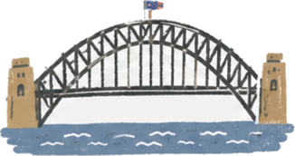
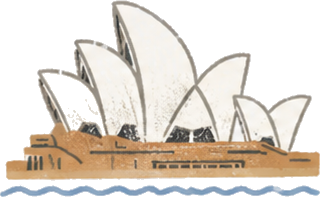
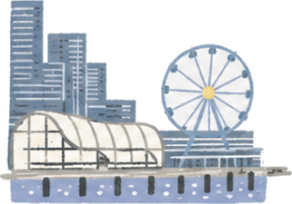

@graceandwhy.ai
📍
시드니
--:--
❚❚
Hey 👋
One Day Around Sydney
오늘 하루 · 시드니 한 바퀴
📍 Sydney · 2026.06.21
One Day Around Sydney
오늘 하루, 시드니 한 바퀴
2026 · 06 · 21
▶ Follow the day · 하루 따라가기
A June day in photos & clips · 사진과 영상이 그린 하루



SYDNEY
· AUS ·
✈ GRACE & WHY
Hello,
SYDNEY
✦ JOURNEY COMPLETE ✦
✈️
0
KM · DISTANCE
📷
0
MOMENTS
📍
0
STOPS
✧ COLLECTED TODAY ✧
SYDNEY COLLECTION
0
/
86
Collect them all ✦
📸 내 여행도 이렇게 ·
DM @graceandwhy.ai
↺ 다시 보기
GPS 사진으로 자동 생성 · base map: OpenStreetMap (Google Maps 전환 예정)